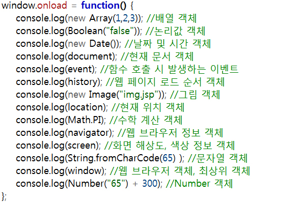

1. 내장 객체 : 자바스크립트가 기본적으로 가지고 있는 객체
2. 사용자 정의 객체 : 사용자가 직접 필요한 클래스를 만들어서 객체를 생성
3. BOM(브라우저 객체 모델)
4. DOM(문서 객체 모델) : 표준객체(모든 브라우저에 존재) - 일반객체(없을 수도 있고, 다를 수도 있다)
※ 자바스크립트 엔진에 내장, 필요한 경우 생성해 사용가능, 문자, 날짜, 배열, 수학, 정규표현 객체 등이 있다.
- 자바스크립트는 객체(Object)기반 언어, 자바스크립트 그 자체
- 데이터와 그 데이터에 관련된 동작을 모두 포함하고 있는 개념
- 프로그램의 대상이 되는 모든 것
- 객체의 속성을 나타내는 접근 가능한 이름과 활용 가능한 값을 가지는 특별한 형태
- 객체가 가지고 있는 동작
- 객체를 움직이는 동작이며, 그 동작을 수행하기 위해서 객체의 정보를 담고 있는 속성을 사용
유용한 내장 객체들

- 여러 개의 데이터를 하나의 저장소에 저장할 때 사용
- 하나의 저장소를 나눠서 데이터를 열거하라
배열객체 선언방식
- var 참조 변수=new Array();
참조 변수[0]=값1; 참조 변수[1]=값2; 참조 변수[2]=값3;…참조 변수[N-1]=값N;
- var 참조 변수=new Array(값1, 값2, 값3…값n);
- var 참조 변수=[값1, 값2, 값3…값n];
다음 예제는 Array 객체를 하나 만들어서 테이블의 <td>를 참조하도록 하고, 참조된 각각의 셀에 내용을 추가하고 배경색을 변경하는 등의 여러 가지 스타일을 자바스크립트에서 변경해보았다. 이제 4행 4열로 만들어진 셀을 좀 더 관리하기 편하게 하기 위해서 2차원 배열을 만들어서 관리하도록 하였다. 그렇게 만들어진 테이블의 각 셀을 체크무늬가 되도록 배경색을 변경해보았다.
<script>
window.onload = function() {
cells = document.getElementsByTagName("td"); //<td>태그들의 컬렉션을 가져와, 1차원 배열의 형태로 받아와진다.
arr = new Array(4); //1차원 배열 형태로 저장된 cells의 내용을 2차원 배열 형태로 변환하기 위한 arr배열을 생성
for(var i=0; i<4; i++) {
arr[i] = new Array(4); //배열의 한 요소에 또 다른 배열을 담는 형태로 2차원 배열구성
for(var j=0; j<4; j++) {
arr[i][j] = cells[4*i+j];
arr[i][j].innerHTML = 4*i+j;
arr[i][j].style.background = //2차원 배열에 담긴 태그의 참조 값이 유효한지 확인하기 위해 배경색을 변경
i%2==0&&(4*i+j)%2!=0 || i%2!=0&&(4*i+j)%2==0 ? "Yellow" : "Green"; //체크무늬 형태로 셀의 배경이 변경되도록 하기위한 조건식
}
}
};
</script>
<table id="puzzle" border="1" width="400" height="400">
<tr>
<td>.</td><td>.</td><td>.</td><td>.</td>
</tr>
<tr>
<td>.</td><td>.</td><td>.</td><td>.</td>
</tr>
<tr>
<td>.</td><td>.</td><td>.</td><td>.</td>
</tr>
<tr>
<td>.</td><td>.</td><td>.</td><td>.</td>
</tr>
</table>
날짜나 시간 관련 정보를 제공받고 싶을 때 사용
날짜, 시간객체 선언방식
참조변수=new Date();
Date객체를 사용한 날짜 입력/출력
date = new Date(); //변수 date가 참조할 Date 객체생성
date.setYear(1975); //date 객체에 년,월,일을 추가
date.setMonth(2);
date.setDate(7);
var strTime = ""; //date 객체에 추가된 날짜를 뽑아 문자열 형태로 저장할 문자열 변수 선언
strTime += date.getYear() + "년 "; //date 객체에 년,월,일을 뽑아서 strTime에 문자열로 변환 후 저장
strTime += date.getFullYear() + "년 ";
strTime += date.getMonth() + "월 ";
strTime += date.getDate() + "일";
document.write(strTime);//strTime에 문자열로 변환되어 저장된 날짜 추가
- 수학과 관련한 기능과 속성을 제공
- new연산자를 사용하여 Math개체를 만들 수 없으며, 만들 경우 오류가 발생함.
- 별도의 객체를 생성하지 않기 때문에 객체보다는 클래스의 성격이 강하다 할 수 있다.
(+ 난수 : 정의된 범위 내(0보다 크고 1보다 작은 수)에서 무작위로 수출된 수를 일컫는다. 누구라도 그 다음에 나올 값을 확신할 수 없어야 한다.)
숫자객체 선언방식
var 참조 변수=new Math.메서드
다음 예제는 회전 운동을 하는 것이다. setInterval()함수를 이용해서 0.03초에 한번씩 반복해서 좌표값이 변경되도록 하였다.
<style>
#box {
position: relative;
left: 250px;
top: 250px;
width: 50px;
height: 50px;
background: red;
}
</style>
<script>
window.onload = function() {
var box = document.getElementById("box");
var x = 0;
var fn = setInterval(function() {
var value = x * 0.1;
var left = 250 + Math.floor(Math.sin(value)*150); //삼각함수를 다루는 Math.sin()함수와 Math.cos()함수를 이용한 원형운동
var top = 250 + Math.floor(Math.cos(value)*50);
var width = 50 + Math.floor(Math.cos(value)*30);
var height = 50 + Math.floor(Math.cos(value)*30);
box.style.left = left + "px";
box.style.top = top + "px";
box.style.width = width + "px";
box.style.height = height + "px";
x++;
}, 30);
};
</script>
<div id="box"></div>
- 사용자의 행위를 이벤트라 한다(마우스를 움직이거나 키를 누르는 등의 동작)
- 이벤트의 방식은 매우 다양하다
(+ arguments 객체: 모든 함수 내에서 이용 가능한 지역변수, 함수 내에서 함수의 인수를 참조 할 수 있다. (~array 같은 객체))
Event객체 선언방식
- 직접 요소 이벤트 등록 방식 : <button id=“btn” onclick=“alert(‘Event’)”>버튼</button>
- DOM을 이용한 이벤트 등록 방식
<button id = “btn”>버튼</button>
document.getElementById(“btn”).onclick=function() {
alert(‘Event’); }
- 현재 웹페이지가 열려 있는 로컬 컴퓨터의 모니터 화면의 해상도나 색상 등의 정보가 저장된 내장 객체
- 사용자의 모니터 정보(속성)를 제공하는 객체 (ex, 모니터의 너비나 높이 또는 컬러 표현 bit를 반환합니다.)
Screen객체 선언방식
screen.속성
- 자바스크립트에서 사용하는 문자열 객체
- new를 이용해 객체를 생성하지 않아도 문자열의 상수형태로 문자열을 만들어도 문자열 객체의 특징을 모두 사용 할 수 있다.
- 인용부호를 이용해서 쉽게 만들 수 있고, length등의 속성을 이용해서 문자열의 길이와 같은 특징을 알아낼 수 있다.
문자열객체 선언방식
var 참조 변수=new String(문자형 데이터)
※ 사용자 정의 객체가 필요한 이유
- 자바스크립트 라이브러리나 프레임워크를 개발 할 때, node.js나 ExtJS와 같은 라이브러리를 사용할 때 꼭 필요하다.
p.94 예제보기
자바스크립트는 프로토타입을 통해서 상속을 제공한다.
※ prototype
- 한국어로 원형이라는 뜻, 즉 객체의 원형이라고 할 수 있다.
- 객체는 프로퍼티를 가지는데 프로토타입이라는 프로퍼티는 용도가 약속되어있는 특수한 프로퍼티이다.
- prototype은 저장된 속성들은 생성자를 통해서 객체가 만들어질 때 그 객체에 연결된다.
- 객체의 변수, 함수에 대한 정보를 prototype속성에 객체 형태로 저장한다.
※ prototype chain
- prototype은 객체와 객체를 연결하는 체인 역할을 한다.
예제 - 햄버거 하우스 게임